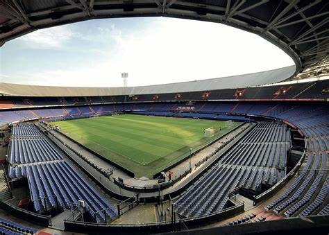
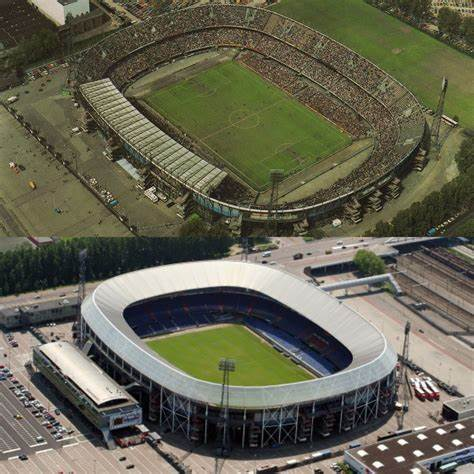
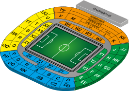
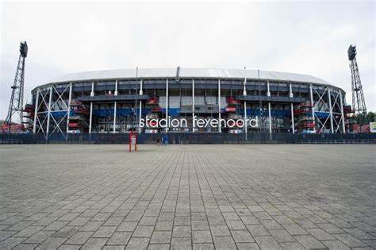

Het stadion: De Kuip
 Stadion Feijenoord, in de volksmond De Kuip, is een voetbalstadion in Rotterdam-Zuid. De Nederlandse betaaldvoetbalclub Feyenoord speelt zijn thuiswedstrijden in het stadion en ook het Nederlands voetbalelftal speelt er regelmatig. Het stadion werd ontworpen door architect Leendert van der Vlugt, van architectenbureau Brinkman en Van der Vlugt. In 1935 werd er begonnen met de bouw; de opening was op 27 maart 1937. De Kuip is na de Johan Cruijff ArenA het grootste voetbalstadion in Nederland. Tevens is De Kuip het stadion waar het Nederlands voetbalelftal de meeste interlands heeft gespeeld.
Al decennialang is Feyenoord de 'bewoner' van De Kuip. Grote man achter het idee van het stadion was Leen van Zandvliet. De voorzitter van Feyenoord in de jaren 30 riep op een dag uit "Ik heb het, ik heb het!" Hij was wakker geworden uit een droom; hij schreef het idee snel op een kladblok. De vorm van het stadion, met een 'loshangende' tweede ring zodat niets het uitzicht van de toeschouwers zou belemmeren, zou zijn droom tot hem zijn gekomen. Enkele maanden later werd architect Van der Vlugt uitgenodigd voor een gesprek. Een stadion met twee verdiepingen moest gerealiseerd worden. De kern van het gesprek was 'eenvoud', verfraaiingen kwamen er niet aan te pas.
De eerste paal werd geslagen door Puck van Heel op 16 september 1935. Daarna werden er nog 578 heipalen 21 meter diep de grond ingeslagen. De bouw van het stadion werd in 1936 afgerond, maar doordat de door de gemeente beloofde infrastructuur rondom het stadion nog niet was aangelegd, stond het stadion er maandenlang onbruikbaar bij en vond de opening pas in maart 1937 plaats. Stadion Feijenoord had een capaciteit van 65.000, met onder meer veel staanplaatsen. Bij de kampioenswedstrijd van SVV tegen Heerenveen in 1949, zou een recordaantal van 69.300 toeschouwers aanwezig zijn geweest. Het jaar 1936 was belangrijk voor de bouw van Stadion Feijenoord. Aan het stadion werden hoge eisen gesteld. Door 1500 mensen – onder meer mariniers en werklozen – werd dit stadion 'uitgetest'. Voor de grasmat werd zand uit Wassenaar gehaald en er werd speciaal gras geïmporteerd.
Het stadion werd officieel opgeleverd op 23 juli 1937. Vóór deze officiële opening werd echter al in maart 1937, in de stromende regen, de eerste wedstrijd in Stadion Feijenoord gespeeld. Feyenoord en Beerschot maakten er een leuke wedstrijd van, waarbij Leen Vente het eerste doelpunt ooit in De Kuip scoorde. De Rotterdammers wonnen uiteindelijk met 5–2 van Beerschot, voor 37.825 toeschouwers. Feyenoord domineerde onder aanvoerder Van Heel. De slotfase van de openingswedstrijd was rechtstreeks op de radio te beluisteren, met commentaar van Han Hollander. De architect van het stadion, Van der Vlugt, overleed in 1936 en heeft de opening niet meegemaakt. De tweede wedstrijd was er een tussen Nederland en België. Nederland won met 1-0, met als opvallend feit dat het weer Leen Vente was die, nota bene in hetzelfde doel, het eerste doelpunt als speler van het Nederlands voetbalelftal in dit stadion scoorde
De bestaanszekerheid van Stadion Feijenoord is niet absoluut. Door de jaren heen waren er drie keer plannen om het stadion te slopen. Zo was er tijdens de Tweede Wereldoorlog een dringende behoefte aan hoogwaardig staal. Staal was de kern van het stadion, en dus werd het doelwit. De liquidatie was nabij, maar het plan vond echter geen doorgang. Naar verluidt gaf de toenmalige directeur van het stadion, toen de Duitsers kwamen inspecteren hoeveel tonnen staal ze konden winnen, slechts een derde van de werkelijke hoeveelheid op, waardoor slopen oninteressant werd. In 1984 wilden de gemeenten Rotterdam en Amsterdam de Olympische Spelen van 1992 naar Nederland halen. Er waren plannen voor een nieuw Olympisch Stadion dat precies op de plek van De Kuip zou moeten komen. Uiteindelijk mocht Barcelona de Spelen organiseren. Toen er in de jaren negentig betonrot en erosie werd geconstateerd in De Kuip ontstond het gevaar dat Stadion Feijenoord niet meer aan de kwaliteitseisen kon voldoen. Hierdoor kwam de optie het stadion te slopen wederom op tafel, maar uiteindelijk werd een renovatie uitgevoerd.
tussen 2006 en 2013 waren de gemeente Rotterdam en Feyenoord onder de werknaam De Nieuwe Kuip bezig met plannen voor een nieuw stadion, dat uiterlijk in 2018 had moeten verrijzen. Omdat het huidige stadion onvoldoende ruimte biedt om Feyenoord verder te laten groeien, werd er gewerkt aan plannen voor een stadion met 63.000 plaatsen. In het eerste plan had het stadion deels op het Eiland Van Brienenoord moeten verrijzen. Later werd er ook een plan gepresenteerd waarbij het stadion op Sportcomplex Varkenoord, recht tegenover De Kuip, zou worden gebouwd. Men had daarbij de intentie om het huidige Stadion Feyenoord een nieuwe functie te geven. Op 10 juli 2013, toen er in de gemeenteraad geen meerderheid te vinden bleek voor een garantstelling, werd duidelijk dat er geen nieuwe Kuip zou komen. Op 1 mei 2014 werd besloten de bestaande Kuip grondig te verbouwen, waardoor het met 70.000 zitplaatsen het grootste stadion van Nederland zou worden. De kosten vielen evenwel veel hoger uit dan verwacht. Begin maart 2015 bleek dat de diverse betrokken partijen, waaronder de eigenaars van het stadion en enkele aannemers, geen voor alle partijen acceptabele oplossing konden vinden. De onderhandelingen werden daarop gestaakt. De 'vernieuwbouw' was daarmee van de baan.
Naast plannen voor een nieuw stadion zijn er in de loop der jaren ook groepen bezorgde supporters geweest die alternatieve plannen publiceerden. Zo werd in 2012 de stichting Red de Kuip opgezet die een renovatieplan had ontwikkeld. In 2020 kwam hier bovendien het initiatief van De Moderne Kuip bij.